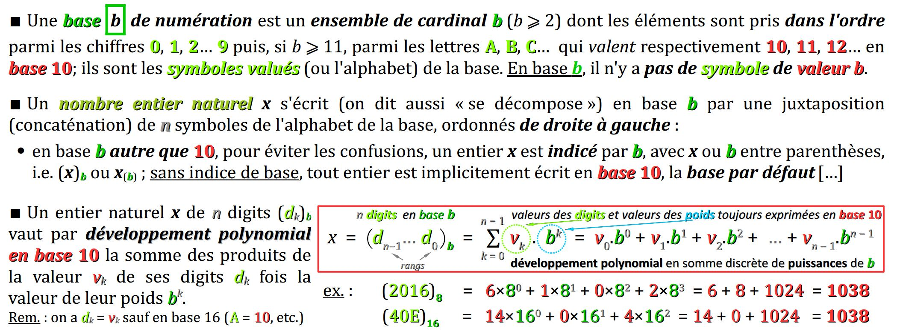

En programmation comme en mathématiques, on utilise avant tout un nombre entier dans un programme pour exprimer :
- soit un aspect cardinal, c'est‑à‑dire relatif à une quantité d'éléments dans un ensemble W ;
- soit un aspect ordinal, c'est‑à‑dire relatif à une position au sein d'une suite ordonnée d'éléments W.
Mais il existe un différence majeure : en mathématiques, les nombres entiers sont sans limite, alors qu'en informatique, les types entiers ont forcément une étendue limitée, puisque les mémoires des systèmes numériques ne peuvent offrir qu'un espace de stockage fini.
En langages C et C++, les types entiers sont fondamentaux car, en plus des nombres entiers à proprement parler, ils servent à définir d'autres types de données : les caractères, les booléens, les énumérés.
Conçus pour permettre une gestion fine de la mémoire, les langages C et C++ mettent à disposition du codeur une grande variété de types entiers :
- avec différentes tailles (1, 2, 4 ou 8 octets),
- et la possibilité ou non de coder un signe positif ou négatif,
offrant ainsi toute une gamme de compromis en termes d'étendue de valeurs et d'encombrement en mémoire pour stocker des données.
Il est certes difficile de percevoir l'importance de ces aspects lorsque l'on débute en programmation, mais il faut comprendre que dans les contextes professionnels du développement informatique, lorsqu'une application doit manipuler des données en grands nombres, le bon dimensionnement de leur taille est une question stratégique.
En tout état de cause, une solide connaissance des types entiers est indispensable à tout codeur. Aussi ce chapitre se donne donc pour objectif :
- de présenter les principales familles de types entiers, en détaillant leurs caractéristiques (taille, étendue, etc.) ;
- de donner la syntaxe de codage des valeurs entières ;
- d'expliquer les deux formats d'encodage des valeurs entières (la façon dont les données sont stockées dans les bits de la mémoire) selon que le type est signé ou non ;
- d'exposer les particularités et précautions d'emploi de certains opérateurs sur les valeurs entières, et d'attirer dès à présent l'attention sur la notion de débordement et de rebouclage cyclique.
Dans cet exposé, les aspects de bas niveau comme les formats d'encodage peuvent ne pas sembler essentiels dans un premier temps pour le codage des programmes. Pourtant, ils constituent des prérequis indispensables pour comprendre des notions étudiées dans les chapitres suivants (opérateurs de décalage de bits, conversions, codage des caractères, etc.).
Variété des types entiers
Les spécifications des normes respectives des langages C et C++ sur les types entiers sont difficiles à comprendre pour un codeur débutant. Au motif d'une forte compatibilité avec l'évolution historique des langages, elles imposent des contraintes minimales de taille tout en laissant une certaine liberté d'implémentation (cf. chap. C1‑II ).
Pour des questions pédagogiques, il est préférable de ne pas trop insister sur ces contraintes normalisées et d'aborder la variété des types entiers de façon pragmatique, au regard des implémentations les plus courantes, en particulier celles basées sur les chaînes de compilation GCC.
Types entiers standards du langage C
Dans le noyau des langages C et C++ (c'est‑à‑dire, sans recourir à un module de bibliothèque), avec la plupart des implémentations :
- on compte quatre types entiers qui diffèrent par leur taille minimale – 1, 2, 4 ou 8 octets – et donc en proportion par le nombre de valeurs encodables ; ils sont respectivement désignés par les descripteurs abrégés :
char,intoushort,intoulongetlong long - le descripteur
intdésignant le type entier à employer par défaut dans toutes les situations sans contraintes particulières ; il a une taille optimisée en fonction de l'implémentation ; - par ailleurs, chaque type entier se décline en deux sous‑types signé et non signés, qui différent l'un de l'autre par leur étendue, c'est‑à‑dire l'intervalle des valeurs encodables ; pour les désigner, il suffit d'adjoindre respectivement l'un des deux mot‑clefs
signedouunsignedau descripteur de type.
Selon l'implémentation (machine et chaîne de compilation – cf. chap. C1‑II ), les types entiers standards ne sont pas toujours désignés par les mêmes descripteurs. Dans le cadre des exercices et TP de ce module de formation, on rencontrera essentiellement 3 cas de figure, que détaille le tableau ci‑dessous.
| PC Linux (GCC) | PC Windows ou Carte 32 bits |
Carte 8 bits (AVR) |
Taille (octets) |
Nombre de valeurs |
Sous‑type signed |
Sous‑type unsigned |
|---|---|---|---|---|---|---|
char |
1 | 28 = 256 | −128 … 0 … 127 | 0 … 255 | ||
short |
short ou int |
2 | 216 = 65 536 | −32 768 … 0 … 32 767 | 0 … 65 535 | |
int |
int ou long |
long |
4 | 232 = 4 294 967 296 | −2 147 483 648 … 0 … 2 147 483 647 | 0 … 4 294 967 295 |
long ou long long |
long long |
8 | 264 = 18 446 744 073 709 551 616 |
−9 223 372 036 854 775 808 … 0 … 9 223 372 036 854 775 807 |
0 … 18 446 744 073 709 551 615 | |
Pour plus de détails sur les différentes implémentations de machines 64 bits, on pourra consulter ce lien W.
- Avec les 5 descripteurs
signed char,short,int,longetlong long, les normes des langages C et C++ définissent en principe 5 types entiers standards signés, mais concrètement, sur les implémentations courantes, il y a toujours deux types qui sont équivalents en termes de taille, comme détaillé dans le tableau ci‑dessus. - Le mot‑clef
signedest facultatif sauf pour le typechar. En effet, sur certaines implémentations, le typecharest non signé. - Le mot‑clef
intest facultatif : - le descripteur
short intest équivalent au descripteur abrégéshort; idem pourlongetlong long; - le descripteur
unsigned intest équivalent au descripteur abrégéunsigned; idem poursigned; - toute donnée déclarée sans descripteur de type se voit attribuer par défaut le type
int(mais pour des questions de lisibilité, il faut ne pas céder à cette facilité).
Valeurs des limites d'étendue sur une implémentation
En règle générale, sachant les techniques d'encodage usuelles (cf. infra ), les limites d'étendue d'un type entier sont données par les expressions exponentielles du tableau ci‑dessous :
| largeur (bits) |
Nombre de valeurs |
Sous‑type signed |
Sous‑type unsigned |
|---|---|---|---|
| n | 2n | {−2n − 1, … 2n − 1 − 1} | {0, … 2n − 1} |
Toutefois, certaines limites d'étendue peuvent être différentes d'une implémentation à l'autre.
C'est pourquoi le langage C met à disposition du codeur le fichier d'en‑tête limits.h de la bibliothèque standard (climits en C++) qui fournit les limites d'étendue des types entiers.
Ces limites d'étendues sont données sous forme de pseudo‑constantes qui prennent chacune une valeur spécifique lors de la compilation pour la machine cible. Elles sont désignées toujours par des identificateurs en majuscules de la forme C :
-
abréviation_MINpour la valeur minimale, -
abréviation_MAXpour la valeur maximale,
encodable dans le type spécifié par le préfixe d'abréviation indiqué dans le tableau ci‑dessous :
| Descripteur | Sous‑type signed |
Sous‑type unsigned |
|||
|---|---|---|---|---|---|
char |
|
||||
short |
SHRT |
USHRT |
|||
int |
INT |
UINT |
|||
long |
LONG |
ULONG |
|||
long long |
LLONG |
ULLONG |
|||
avec le cas particulier du type char, conformément à la remarque A) supra.
Ainsi, pour afficher la valeur maximale encodable dans le type unsigned, il suffit de coder :
-
Serial.println(UINT_MAX);dans un programme pour carte Arduino, sans oublier d'initialiser préalablement le moniteur série (cf. chap. C3‑X ) ; -
printf("%u\n", UINT_MAX);dans un programme pour ordinateur, sans oublier de coder préalablement la directive#include <stdio.h>(cf. chap. C2‑I ).
Dans les deux cas, il faut ne pas oublier de coder en début de programme la directive :
#include <limits.h>
Types entiers à largeur spécifiée
Problématiques
On a vu que le type entier char se nomme ainsi (comme abréviation de character en anglais) car il permet de représenter le jeu de caractères ASCII restreint (cf. chap C3‑I ).
Mais ce mot‑clef pose un problème de lisibilité dans les descripteurs de types pour déclarer des données représentant des nombres, et non pas des caractères.
Un codage de boucle répétitive for comme :
for (char i = 0; i <= 10; i++) {
n'est pas très clair, car la variable d'itération i, déclarée de type char ne représente pourtant pas un caractère (sinon, ses valeurs initiales et finales seraient codées par des valeurs de caractères comme 'A'…).
Il serait donc plus logique de coder :
for (int i = 0; i <= 10; i++) {
mais alors la variable i occupe alors un espace mémoire disproportionné (4 octets) par rapport à l'étendue des valeurs qu'elle prend.
De plus, le fait que certains types aient une taille variable selon l'implémentation peut poser des problèmes de portage du code source d'un programme.
Par exemple, un programme utilisant des données de type int qui aurait été développé pour une carte Arduino Due pourrait subir des dysfonctionnements s'il était porté sur une Arduino Uno ou ce type est deux fois moins large.
Types entiers à largeur spécifiée
Le fichier d'en‑tête stdint.h (cstdint en C++) de la bibliothèque standard du langage déclare par synonymie – c'est‑à‑dire via le mot‑clef typedef – une série de types entiers à largeur spécifiée :
- signés –
int8_t,int16_t,int32_tetint64_t; - et non signés –
uint8_t,uint16_t,uint32_tetuint64_t;
où le nombre dans l'identificateur – 8, 16, etc. – explicite la largeur en bits du type, quelle que soit l'implémentation.
En termes de bonnes pratiques, il est recommandé de ne pas recourir au type int mais d'utiliser systématiquement des types à largeur spécifiée, et ceci particulièrement :
- si les données déclarées peuvent prendre des valeurs un tant soit peu élevées (au delà de ±100) ; en effet, des produits de ces valeurs peuvent facilement déborder de l'intervalle des valeurs encodables du type
intsi ce dernier a une taille de seulement 2 octets ; - ou si la machine cible possède une architecture à mémoire très limitée, typiquement comme les cartes Arduino Uno, Nano et les microcontrôleurs ATtiny.
int8_t est l'identificateur d'un type à largeur spéciée de valeurs entières signées encodées sur exactement 8 bits, soit un octet. Il est équivalent au type signed char.
Ce type est un bon choix pour déclarer une variable d'itération de boucle for dans les environnement à mémoire limitée, du moins tant que cette variable reste dans l'intervalle {−128 ; +127}.
- Le fichier d'en‑tête
stdint.h(cstdinten C++) C : - définit deux autres séries de types à largeur spécifiée (
_fastet_least) ; - mais peut éventuellement ne pas définir la série
int8_t,int16_t… exposée supra ; tout dépend de l'implémentation ; - définit également les pseudo‑constantes donnant les valeurs limites de tous les types qui y sont définis (
INT8_MIN,INT8_MAX, etc.). - La bibliothèque standard comporte également le fichier d'en‑tête
inttypes.h(cinttypesen C++ et même page de référence que supra) : - où figure la directive
#include <stdint.h>(<cstdint>en C++) ; - et qui définit en plus des spécifications de conversion appropriées à employer pour les entrées‑sorties (avec les fonctions
printf,scanf– cf. chap. C2‑VI ) dans le cas de données de types entiers à largeur spécifiée. - Dans un programme Arduino, il n'est pas nécessaire de coder une directive d'inclusion pour employer les types entiers à largeur spécifiée. En effet, la directive :
#include <inttypes.h>
est déjà codée dans le fichierHardwareSerial.h, lui‑même inclus par une directive dans le fichierArduino.h(cf. chap. C2‑I ). Et comme expliqué supra, on y trouve la directive d'inclusion du fichier d'en‑têtestdint.h.
Codage et types des constantes littérales entières
Rappels de numération
Les passages ci‑dessous sont extraits d'un cours de numération pour les Sciences de l'ingénieur, que l'on pourra consulter en intégralité si besoin .
Notion de constante littérale entière
Comme en mathématiques, dans une expression codée en langage C ou C++ (et hors d'une chaîne de caractère), toute suite de chiffres, éventuellement précédée d'un signe + ou -, est interprétée par le compilateur comme une constante littérale entière.
De plus, la valeur numérique de cette constante est interprétée par défaut – c'est‑à‑dire, sauf spécification particulière – en base 10 selon le principe usuel de la numération par position avec, de droite à gauche, le chiffre des unités, des dizaines, etc.
Dans cette syntaxe de codage par défaut, du fait qu'une constante littérale se lit directement comme sa valeur numérique usuelle (en base 10), on peut avoir tendance à confondre ces deux notions.
Dans n'importe quelle expression, la constante littérale codée 12345 est interprétée par le compilateur comme la valeur numérique 12 345 (douze‑mille-trois‑cent-quarante‑cinq).
Mais on va voir ci‑après que la syntaxe des langages C et C++ permet de coder des constantes littérales entières de bien d'autres façons.
Codage d'une constante littérale entière en base 2, 8, 16
Remarquons tout d'abord que les langages de programmation ne reconnaissent pas les notations mathématiques indicielles (x)b ou x(b) qui sont d'usage pour signifier qu'une constante littérale s'exprime en base b.
Et plus généralement, un éditeur de code ne permet pas la saisie de texte en indice. C'est pourquoi d'autres notations sont employées – avec des préfixes.
En langages C et C++, on peut coder une constante littérale entière dans une base de numération autre que la base 10 par défaut en adjoignant à cette valeur un préfixe :
- La constante littérale
0b11code la même valeur que3(sans préfixe) ; - La constante littérale
0xFFcode la même valeur que255(idem) ; - La constante littérale
077code la même valeur que63(idem).
La base 8 a beau être désuète depuis longtemps, son préfixe 0 est maintenu par la norme du langage pour des questions de compatibilité des anciens programmes avec les compilateurs actuels.
En méconnaître l'existence est une source d'erreur pour un codeur débutant. On veillera donc à ne jamais coder une constante littérale entière en base 10 avec un zéro initial – à gauche, autrement dit un zéro non significatif – sous peine sinon de mauvaise surprise à l'exécution !
Rappelons en revanche qu'il est parfaitement possible, via des spécifications de conversion, de coder des instructions d'affichage de valeur numérique entière avec un zéro initial (comme le jour et le mois dans une date, par exemple 01/01/1970).
Intérêt de la base 16
Chaque base de numération a des usages spécifiques :
- la base 10 sert pour les valeurs et calculs usuels ;
- la base 16 sert pour exprimer les adresses (mémoire, réseaux, etc.) et plus généralement tous les mots binaires de grande taille (codes couleurs, etc.) ;
- la base 2 sert pour le détail des bits dans tout ou partie d'un mot binaire.
En particulier, la base 16 présente l'intérêt essentiel d'exprimer avec quatre fois moins de digits les codes binaires (lesquels présentent justement l'inconvénient d'être souvent très longs).
En effet, partant de l'égalité 24 = 16, toute nombre entier écrit en base 2 se transcode en base 16 – et réciproquement – en procédant quartet par quartet.
Rappel : un quartet est un mot binaire de 4 bits, autrement dit un demi‑octet.
Le transcodage en base 16 d'un code binaire présente l'avantage d'être plus facile à saisir et à lire, à condition de connaître les valeurs des digits hexadécimaux figurant dans les tableaux ci‑dessous.
| base 16 | 0 | 1 |
2 | 3 |
4 | 5 |
6 | 7 |
8 | 9 |
|---|---|---|---|---|---|---|---|---|---|---|
| base 2 | 0000 |
0001 |
0010 |
0011 |
0100 |
0101 |
0110 |
0111 |
1000 |
1001 |
| base 16 | A | B |
C | D |
E | F |
|---|---|---|---|---|---|---|
| base 10 | 10 |
11 |
12 |
13 |
14 |
15 |
| base 2 | 1010 |
1011 |
1100 |
1101 |
1110 |
1111 |
Le nombre entier 200 (en base 10), codé 0b11001000 en base 2 sur 8 bits, se code avec seulement 8 ÷ 4 = 2 digits – à savoir 0xC8 – en base 16 :
- le digit hexadécimal
Ccode le quartet1100dit « de poids fort » ; - le digit hexadécimal
8code le quartet1000dit « de poids faible ».
On peut vérifier qu'on a bien 200 = 192 + 8 = 12×161 + 8×160.
Typage d'une constante littérale entière
Type par défaut d'une constante littérale entière
Dans une expression en langage C ou C++, toute constante littérale entière est compilée par défaut – c'est‑à‑dire sauf codage d'un suffixe, cf. infra – comme étant de type :
-
int,longoulong longsi elle est codée sans préfixe de base – autrement dit en base 10 ; -
int,unsigned int,long,unsigned long,long longouunsigned long longsi elle est codée avec un préfixe de base 2, 8 ou 16 ;
et ce par ordre de préférence, dès que cette valeur entre dans l'étendue d'un de ces types.
Ainsi, dans une expression, une constante littérale entière n'est donc jamais compilée comme étant de type char ou short, même si sa valeur est incluse dans l'étendue de ces types. Elle est toujours « au moins » de type int.
Sur une carte Arduino à cœur AVR (Uno, Nano, Mega…) – donc avec une architecture 8 bits :
- la constante littérale codée
100est compilée de typeint, même si elle aurait pu être encodée à moindre coût mémoire dans le typechar; - la constante littérale codée
32768est compilée de typelongcar elle n'entre pas dans l'étendue du typeint; - la constante littérale codée
0x8000(qui vaut32768) est compilée de typeunsigned intparce qu'elle est codée en base 16 et qu'elle entre dans l'étendue de ce type (mais pas dans celle du typeint).
L'attribution d'un type à une constante littérale détermine le nombre de registres requis dans le CPU pour effectuer un calcul avec cette donnée. La stratégie de compilation consistant à attribuer à toute valeur entière un type de taille au moins aussi grande que celle du type int permet de diminuer les risques de débordement des limites minimales et maximales lors de l'évaluation des expressions calculatoires.
Dans l'expression calculatoire ci‑dessous :
21 * 10 / 7
toutes les constantes littérales qui y sont codées, ainsi que le résultat (a priori, la valeur 30) sont encodables dans le type signed char. Heureusement, le compilateur encode toutes ces valeurs dans le type int, sinon le résultat serait erroné. En effet :
- la valeur de la sous‑expression
25 * 10vaut300, ce qui est supérieur à la limiteCHAR_MAX(127) ; - par rebouclage (cf. infra ), cette sous‑expression prendrait la valeur
-46, donc l'expression21 * 10 / 7prendrait la valeur-46/7, c'est‑à‑dire-6, et non pas la valeur attendue30!
On comprend à la lumière de cet exemple académique pourquoi il ne serait pas judicieux de compiler les constantes littérales entières dans un type de petite taille même si elles sont petites.
Les débordements d'entiers et leurs conséquences sont expliqués infra . Des éléments pour leur prévention sont apportés au chapitre C3‑VI .
Codage de contraintes de typage
Même avec les types attribués par défaut aux constantes littérales, un problème de débordement peut se présenter, notamment sur les architectures 8 bits où le type int n'est souvent implémenté que sur 2 octets.
C'est pourquoi en langages C et C++, le codeur peut imposer une contrainte de typage à toute constante littérale à valeur entière, en lui adjoignant un ou deux suffixes concaténés parmi les suivants :
-
uouUpour imposer un type non signé ; -
louLpour imposer un type de taille au moins égale à celle delong; -
llouLLpour imposer le typelong long.
Sur une carte Arduino à cœur AVR (Uno, Nano, Mega…) – donc avec une architecture 8 bits :
- la constante littérale codée
100Lsera compilée de typelong, imposé par le suffixeL; - la constante littérale codée
100Usera compilée de typeunsigned, imposé par le suffixeU; - la constante littérale codée
100ULsera compilée de typeunsigned long, imposé par les suffixesUetL.
- Il n'existe pas de suffixe pour imposer un type
shortoucharà une constante littérale entière. Cela n'aurait aucun intérêt puisqu'elle serait immédiatement convertie dans le typeintlors de la compilation. - L'attribution d'un type – par défaut ou par suffixe – à une constante littérale entière ne change pas le type d'une donnée déclarée auquel cette constante serait affectée.
int8_t a = 100;
la constante littérale codée
100 est compilée (donc évaluée) par défaut de type int. a, cette valeur est implicitement convertie dans le type int8_t. Cela ne pose pas de problème parce que 100 est bien dans l'étendue du type int8_t. La conversion s'effectue sans perte d'information, les bits tronqués étant tous nuls. Séparateur digital
Depuis la norme C++14, le langage C++ dispose du séparateur digital '. Ce symbole est insérable partout entre les digits d'une constante littérale entière, quelle que soit la base de numération, pour faciliter la saisie et la lecture, en particulier quand la valeur comporte un grand nombre de digits.
Pour une bonne lisibilité, on peut utiliser le séparateur digital pour coder les grandes constantes littérales dans les déclarations ci‑dessous :
int a =5'000'000; // 5 millions short b =0b10'0111'1111; // 639
Le séparateur digital ' :
- n'existe pas en langage C ;
- n'est pour le moment pas utilisable dans les programmes pour cartes à microcontrôleur compilés avec les versions 1.8.x du logiciel Arduino IDE (il utilise des compilateurs GCC conformes à la norme C++11) ;
- mais est accepté depuis peu dans l'environnement de simulation Tinkercad (car il utilise un compilateur conforme à la norme C++14 – cf. chap. C1‑III ).
Encodage des données entières
Rappelons que l'encodage d'une donnée est la manière dont sa valeur est stockée dans les bits de la mémoire de la machine cible durant l'exécution du programme (cf. chap. C2‑III ). On parle aussi de format d'encodage ou de représentation en mémoire.
Il faut ne pas confondre la notion d'encodage d'une donnée avec celle de codage des constantes littérales dans le programme source, exposée supra.
Dans le cas des types entiers, c'est le fait d'être signé ou non signé qui détermine un encodage spécifique.
Encodage des entiers non signés
Principe d'encodage
En mathématiques, on appelle entier « naturel » tout nombre entier positif ou nul, c'est‑à‑dire non signé.
En informatique, on parle de code binaire naturel pour nommer l'encodage entier non signé W. Cet encodage procède selon le même algorithme de numération par position que celui employé usuellement en base 10.
Mais en base 2, un digit – c'est‑à‑dire un bit – est beaucoup plus vite « épuisé » qu'en base 10 pour exprimer des nombres, puisqu'on ne dispose que des deux symboles 0 et 1. Donc, avec n bits, on peut encoder seulement 2n valeurs. Par exemple, sur 8 bits, on peut encoder 28 = 256 valeurs.
À titre de comparaison, en base 10, on peut encoder 10n valeurs sur n chiffres (par exemple, sur 8 chiffres, 108 soit 100 millions de valeurs).
Algorithme de conversion de la base 10 vers la base 2
Algorithmiquement, le code binaire naturel (donc, en base 2) d'un nombre entier x (exprimé en base 10) s'obtient par n divisions euclidiennes successives par 2 de x jusqu'à obtenir un quotient nul.
En notant comme ci‑dessous, pour k allant de 0 à n − 1, l'équation fondamentale de la k‑ième division euclidienne par 2 :
Dk = 2.qk + rk
et sachant que les dividendes Dk et les quotients qk sont liés par la relation :
Dk + 1 = qk (avec D0 = x)
alors les n bits dk du code binaires de x sont, dans l'ordre de leur rang k croissant, les restes successifs rk de chaque division, comme illustré sur la figure ci‑contre.
La conversion en base 2 du nombre entier 14 est illustrée par la figure ci‑dessous, avec :
- à droite la succession algorithmique des divisions euclidiennes posées en cascade ;
- et à gauche la mise en équation de ces divisions, qui permet de reconstituer la valeur 14 comme une somme discrète de puissances croissantes de 2.
Expression d'un entier positif en somme discrète de puissances de 2
Mathématiquement, les n bits dk formant le code binaire naturel d'un nombre entier x sont les coefficients multiplicateurs binaires d'une somme discrète< de puissances de croissantes de 2 – cette somme valant x. On appelle poids ces puissances de 2 (cf. la figure ci‑dessous).
En encodage binaire naturel, le poids du bit de rang k vaut 2k. Cette valeur double à chaque incrémentation du rang du bit et détermine donc l'importance de du bit dans la valeur encodée :
- le bit de rang 0 est dit de poids faible (en anglais, least significant bit ou LSB) ; ce poids vaut toujours 1 ;
- le bit de rang n − 1 est dit de poids fort (en anglais, most significant bit ou MSB) ; ce poids vaut la moitié de la valeur maximale encodable dans le type, arrondie à l'entier supérieur.
L'encodage en binaire naturel du nombre entier 200 dans le type uint8_t est analysé dans la figure ci‑dessous.
L'encodage en binaire naturel des entiers non signés est dit :
- bijectif car, quelle que soit la taille du type considéré, tout code binaire correspond à une valeur en base 10, et réciproquement ;
- monotone car il procède toujours de façon croissante depuis la valeur minimale à la valeur maximale dans les deux bases ;
- pondéré car il attribue des poids aux bits.
Encodage des entiers signés
Il existe différents formats binaires d'encodage des entiers signés, mais celui dit du « complément à 2 » est presque universellement employé W. Les autres (complément à 1, signe‑magnitude) sont désuets ; néanmoins, ils restent autorisés par les normes des langages C et C++, au motif de garantir leur compatibilité avec d'anciennes implémentations.
Principe d'encodage par complément à 2
L'encodage dit par « complément à 2 » consiste à :
- réserver le bit de plus haut rang pour coder :
- par
0l'absence du signe « − », c'est‑à‑dire pour les valeurs positives ; - par
1la présence du signe « − », c'est‑à‑dire pour les valeurs négatives ;
- par
- coder sur les bits restants comme en binaire naturel :
- les valeurs positives en partant de 0 ;
- les valeurs négatives en partant de la plus basse (−2n−1 pour un type de largeur n bits).
En mathématique, le format d'encodage en complément à 2 est noté « 2± ». Le code x(2±) d'une valeur entière négative x sur n bits est donné par la formule :
x(2±) = 2n(2) − |x|(2)
autrement dit, par complémentarité de la valeur positive correspondante (|x|) à la valeur 2n, ce qu'on abrège (par abus de langage) en « complément à 2 ».
Prenons l'entier x = −5 à encoder sur n = 8 bits – par exemple dans le type int8_t. On obtient son code binaire en complément à 2 en effectuant la soustraction :
- du code binaire naturel de 2n (encodable sur 9 bits),
- moins le code binaire naturel de 5,
en appliquant la même technique qu'en base 10 pour les calculs et les retenues.
Décomposition d'un entier relatif en somme discrète de puissances de 2
Mathématiquement, le code binaire en complément à 2 d'un nombre entier découle de la décomposition de la valeur en base 10 de l'entier en une somme de puissances croissantes de 2 comme en binaire naturel, mais en attribuant au bit de signe le poids négatif −2n−1.
Le code binaire en complément à 2 du nombre entier −100 dans le type int8_t est analysé dans la figure ci‑dessous. On part du poids négatif −27 = −128 auxquel on ajoute des puissances de 2 pour retrouver le nombre initial.
- L'encodage binaire en complément à 2 des entiers signés est, comme celui des entiers non signés, bijectif et pondéré (cf. supra ), même si le poids du bit de signe est spécial.
- L'encodage binaire en complément à 2 présente également l'intérêt d'être totalement compatible avec l'encodage en binaire naturel pour la plage des valeurs positives et nulle : leur code ne change pas d'un format à l'autre, autrement dit :
si n ≥ 0 alors n(2±) = n(2)
0, celui de la valeur 0. Opérations sur les entiers
Tous les opérateurs élémentaires du langage C (cf. chap. C2‑IV ) sont applicables aux données de types entiers. Toutefois, la vigilance du codeur est requise au regard des points suivants.
- Les opérateurs booléens (
!,&&,||), bits à bits (~,&,|,^) et de décalage des bits (>>,<<) sont complexes. Ils seront détaillés dans le chapitre consacré aux types booléens (cf. chap. C3‑III ). - Les opérateurs de comparaison (
==,!=,>,>=,<,<=) sont conformes à leurs équivalents mathématiques respectifs (=, ≠, >, ≥, <, ≤). Toutefois, ils doivent être employés avec précaution lorsque les deux opérandes sont de types entiers respectivement signés et non signés. - Parmi les opérateurs arithmétiques (
+,-,*, etc.), ceux relatifs à la division euclidienne (/,%) sont souvent méconnus des débutants et doivent être détaillés.
Par ailleurs, il est indispensable d'aborder la problématique des débordements, qui n'est pas spécifique à tel ou tel opérateur ni à tel ou tel type entier, mais au regard de laquelle les opérations élémentaires sur les entiers constituent un « cas d'école ».
Opérateurs d'infériorité et de supériorité
En langages C/C++, avec des opérandes de types entiers, les opérateurs de supériorité et d'infériorité >, >=, < et <= sont évalués conformément à leurs équivalents mathématiques respectifs (>, ≥, < et ≤) sauf :
- lorsque l'un des opérandes est de type non signé et l'autre signé ;
- et que l'opérande de type signé prend une valeur négative ;
c'est‑à‑dire par exemple dans une expression comme 1u > -1 qui, contre‑intuitivement, sera évaluée fausse !
Pour se convaincre du problème, il suffit de tester les exemples académiques ci‑dessous avec OnlineGDB :
#include <stdio.h>
int main(void) {
unsigned a = 1;
int b = -1;
// a > b BUT:
printf("a < b : %d\n", a < b); // wrong!
printf("a <= b : %d\n", a <= b); // wrong!
printf("a > b : %d\n", a > b); // wrong!
printf("a >= b : %d\n", a >= b); // wrong!
return 0;
}
En effet, à l'exécution, on obtient en sortie standard l'affichage suivant :
a < b : 1 a <= b : 1 a > b : 0 a >= b : 0
où toutes les expressions de comparaison prennent des valeurs erronées.
A contrario, le problème disparaît si l'on déclare la variable a de type int (ou de n'importe quel autre type entier signé).
Remarque. Si l'on compile le programme avec les options d'affichage des avertissements ci‑dessous (choix recommandé dès le chap. C1‑II ) :
gcc -Wall -Wextra
le compilateur émet un avertissement pour chacune des expressions de comparaison, par exemple :
unsignedSignedTest.c: In function ‘main’: unsignedSignedTest.c:7:29: warning: comparison of integer expressions of different signedness: ‘unsigned int’ and ‘int’ [-Wsign-compare] 7 | printf("a < b : %d\n", a < b); // wrong! | ^
Ce constat étant fait, pour ne pas coder de telles expressions de comparaison qui seraient mal évaluées, il importe donc de bien choisir les types des données manipulées par le programme ou d'effectuer ponctuellement les conversions explicites nécessaires (cf. chap. C3‑VI ).
En règle générale, il est vivement conseillé :
- d'employer par défaut des types signés ;
- de recourir aux types non signés seulement si c'est indispensable, c'est‑à‑dire lorsqu'une variable est amenée à prendre les valeurs positives qui débordent de l'étendue du type signé de même taille que celui qu'on choisirait sinon.
Quotient et reste d'une division euclidienne
On rappelle qu'en mathématiques, on peut définir la division euclidienne W comme une opération sur deux nombres entiers relatifs a (le dividende) – et b ≠ 0 (le diviseur). Elle est notée a ÷ b et son résultat est le nombre q appelé quotient tel que :
le nombre r étant appelé le reste de la division.
Remarque. En mathématiques, il n'y a pas de symbole d'opérateur pour définir le reste de la division euclidienne. Le plus souvent, on emploie l'abréviation mod (pour modulo).
Il est facile de concevoir la division euclidienne en termes de répartition équitable avec des entiers naturels. Par exemple, répartir 17 pommes entre 5 personnes donne 3 pommes par personnes et un reste indivisible de 2 pommes – ce qui s'écrit :
17 ÷ 5 = 3 car 17 = 5 × 3 + 2
En revanche, la division euclidienne est plus subtile à interpréter avec des entiers relatifs.
- Un dividende négatif peut être vu comme une dette. Ainsi donc, pour rembourser équitablement une dette de 17 euros, 5 personnes doivent en rembourser 4 euros, avec un excédent indivisible de 3 euros – ce qui s'écrit :
−17 ÷ 5 = −4 car −17 = 5 × −4 + 3 - Mais une division euclidienne avec un quotient négatif est difficile à interpréter. On doit s'en tenir aux équations :
- −17 ÷ −5 = 4 car −17 = −5 × 4 + 3
- 17 ÷ −5 = −3 car 17 = −5 × −3 + 2
L'opérateur /
En langages C/C++, dans une expression de la forme a / b ou a et b sont deux opérandes de types entiers avec a ≥ 0 et b ≠ 0, l'opérateur / retourne comme valeur le quotient q de la division euclidienne a ÷ b (il n'y a pas d'opérateur de division algébrique sur les entiers).
Mais attention, avec la plupart des implémentations, si le dividende a est négatif, alors la valeur q de l'expression a / b n'est pas conforme à celle d'une division euclidienne au sens mathématique. Elle vérifie bien la relation a = b.q + r mais avec un reste négatif tel que −|b| < r ≤ 0 (cf. les exemples ci‑après).
Le quotient retourné par l'opérateur / prend une valeur de type entier. Comme pour toutes les opérations arithmétiques binaires, ce type est :
Sur une architecture 8 bits (carte Arduino Uno, Nano, Mega…), l'expression :
-
17 / 5est évaluée3et encodée dans le typeint; -
170000 / 50000est évaluée3et encodée dans le typelong.
Attention ! Avec la plupart des implémentations – OnlineGDB, GCC, Arduino, etc. – l'expression :
-
-17 / 5est évaluée-3(alors que −17 ÷ 5 = −4) ; -
-17 / -5est évaluée3(alors que −17 ÷ −5 = 4).
avec dans les deux cas, un reste négatif (cf. infra).
En revanche, 17 / -5 est évaluée -3 conformément au fait que 17 ÷ −5 = −3.
Si un seul des deux opérandes d'une division est de type décimal, l'expression a / b est compilable mais effectue une division algébrique, c'est‑à‑dire sans reste et retournant un quotient à valeur décimale.
Si l'on souhaite justement effectuer une division algébrique entre deux données de type entiers, il est nécessaire de coder une conversion explicite (cf. chap. C3‑VI ) de l'une d'elle dans un type décimal.
Exemple. Dans l'environnement OnlineGDB l'expression :
(double) 17 / 5
sera évaluée 3.4 et encodée dans le type double.
L'opérateur %
En langages C/C++, dans une expression de la forme a % b ou a et b sont deux opérandes de types entiers avec a ≥ 0 et b ≠ 0, l'opérateur % – dit modulo W (en anglais remainer) – retourne le reste de la division euclidienne a ÷ b.
Ce reste est évidemment de type entier (même principe qu'énoncé supra ). Sa valeur est forcément comprise dans l'intervalle {0, … b − 1}.
Attention ! Si a < 0, alors l'expression a % b prend une valeur négative comprise dans l'intervalle {−|b| + 1, … 0}.
L'opérateur modulo est très utile en programmation, en particulier :
- pour générer une variable cyclique par incrémentation (cf. l'exemple ci‑après) ;
- pour tester la divisibilité d'une valeur entière par une autre.
a % b est évaluée nulle. En langage C/C++, si un seul des deux opérandes a et b est de type décimal, alors l'expression a % b n'est pas compilable.
Dans le tableau ci‑dessous, on donne en première ligne les valeurs croissantes par incrémentation unitaire d'une variable entière a.
En deuxième ligne, on observe la valeur cyclique de l'expression a % 4, comprise dans l'intervalle {0, … 3} (3 = 4 − 1) :
a |
0 | 1 |
2 | 3 |
4 | 5 |
6 | 7 |
8 | 9 |
10 | … |
|---|---|---|---|---|---|---|---|---|---|---|---|---|
a % 4 |
0 |
1 |
2 |
3 |
0 |
1 |
2 |
3 |
0 |
1 |
2 |
… |
On obtient la valeur 0 pour chaque valeur de a qui est divisible par 4.
Division par 0
On rappelle que dans le cas d'une division euclidienne dont le diviseur est 0, le quotient comme le reste ne sont mathématiquement pas définis comme des entiers.
En conséquence :
- si le code source d'un programme comporte une expression de la forme :
a / 0oua % 0
alors la compilation échoue, le compilateur émettant un message d'erreur ; - sinon, lors de l'exécution d'un programme, au moment de l'évaluation d'une expression codée de la forme :
a / boua % b
si l'opérande b prend la valeur0, alors cette évaluation n'aboutit pas et au bout de quelques secondes, l'exécution est interrompue avec un code de retour de la fonctionmaindifférent de0, c'est‑à‑dire synonyme d'erreur (cf. chap. C2‑I ).
Débordements d'entiers et conséquences
Notion de débordement d'entier
On parle de débordement d'entier W (en anglais integer overflow W) lorsque, durant l'exécution d'un programme, la valeur d'une expression de type entier n'appartient pas à l'étendue de ce type.
Autrement dit, un débordement intervient lorsque l'évaluation de l'expression aboutit à une valeur qui dépasse la capacité de stockage en mémoire ou dans le registre de calcul utilisé. Matériellement, cela se traduit par la perte des octets nécessaires à l'encodage de la valeur mais qui sont de rangs plus élevés que ceux prévus par la taille du type.
Règle générale de traitement des débordements d'entiers
Dans le cas d'un type entier non signés encodé sur n bits, la perte des octets de trop hauts rangs se traduit par un rebouclage en arithmétique cyclique modulo N, où N = 2n est le nombre de valeurs encodables dans le type (par exemple, 28 = 256 pour 8 bits).
Ainsi, une incrémentation unitaire (+1) d'une donnée ayant déjà la valeur 2n − 1 (la limite haute de l'étendue pour un encodage sur n bits) met à 0 tous les bits du format qui étaient à 1 (par propagation de la retenue), et nécessite un bit valant 1 de rang plus élevé, donc, dans un octet supplémentaire.
Cet octet supplémentaire peut très bien exister dans un registre de calcul de l'unité artithmétique et logique du processeur, mais il sera perdu in fine puisqu'il n'est pas dans le format de stockage en mémoire de la donnée. Cette dernière reboucle donc à 0 (la limite basse de l'étendue des valeurs encodables), comme illustré sur la figure ci‑contre.
Plus généralement, quelle que soit la valeur entière positive a qu'il faille encoder en mémoire sur n bits, c'est seulement la valeur a mod 2n qui est effectivement stockée par la machine, que ce soit lors de la compilation ou de l'exécution.
Ce comportement est précisément celui attendu par les normes des langages C et C++.
Dans le type entier non signé uint8_t, formaté sur n = 8 bits (1 octet) avec donc N = 256 valeurs encodables :
- la valeur
200sera encodée 200 mod 256, c'est‑à‑dire200; - la valeur
1000sera encodée 1000 mod 256, c'est‑à‑dire232(car 1000 = 3 × 256 + 232) ;
200 est bien dans l'intervalle {0, … 255} des valeurs encodables dans le type uint8_t ; 1000 n'est pas dans l'intervalle {0, … 255} des valeurs encodables dans le type uint8_t. Dans le cas des types entiers signés, comme les normes des langages C et C++ n'impose pas de format à l'implémentation. Elles considèrent comme indéterminé le résultat d'un débordement.
Mais dans la pratique, avec un compilateur qui emploie le format du complément à 2 (cf. supra ), une incrémentation unitaire (+1) d'une donnée encodée sur n bits, ayant déjà la valeur 2n−1 − 1 (la limite haute de l'étendue sur n bits) met à 0 tous les bits du format qui étaient à 1 (par propagation de la retenue), sauf le bit de signe qui était à 0 et qui passe donc à 1. La donnée reboucle donc à la valeur −2n−1 (la limite basse de l'étendue), comme illustré sur la figure ci‑contre.
En règle générale, lors de l'exécution d'un programme, un débordement d'entier est donc traité en arithmétique cyclique, sans interruption du processus d'exécution.
- Le terme « overflow » est usuellement employé par les compilateurs pour signaler les débordements aussi bien par le haut que par le bas. Cela n'exclut pas que le terme « underflow » puisse également être utilisé par la norme ou par certains compilateurs pour qualifier spécifiquement un dépassement de limite basse d'un type entier, mais en général, ce terme est réservé pour les nombres flottants (cf. chap. C3‑V ).
- Même si un débordement d'entier ne provoque pas d'interruption de l'exécution du programme, lorqu'il est non intentionnel ni anticipé par le codeur lors de l'évaluation d'une expression, il constitue une source d'erreur dont la gravité potentielle ne doit pas être minimisée. Un accident industriel majeur est réputé avoir eu une telle cause W.
Exemples pratiques de débordements d'entiers
Un débordement inopiné peut résulter de diverses erreurs de codage et avoir des conséquences négatives. Les exemples proposés ci‑après n'ont rien d'exhaustifs, mais sont assez « classiques » chez les programmeurs débutants.
- Le cas le plus trivial est celui de l'affectation directe dans un type sous‑dimensionné (ou avec une valeur sur‑dimensionnée, selon un point de vue complémentaire) ;
- seul l'octet de poids faible (least significant byte ou LSB) est stocké et il encode seulement la valeur
44(32 + 8 + 4) ; - quant à l'octet de poids fort (most significant byte ou LSB), il est perdu.
- Un cas moins flagrant – mais néanmoins courant – est celui du codage d'une expression dont l'évaluation produit une valeur beaucoup plus grande que celle de ses atomes, au point de déborder du type automatiquement choisi par le compilateur pour cette évaluation.
- il est inutile de changer le type de la constante
blinkHighDurationpuisque l'erreur se produit avant toute affectation ; - il est inutile également de coder les suffixes
LUà la constante100puisque celle‑ci est traitée après évaluation de la sous‑expression problématique ; - il est impossible de changer le parenthésage en codant l'expression :
blinkPeriod * (dutyCyclePercent / 100)
car la division euclidienne75/100donnerait la valeur0! - Enfin, un cas bien plus « vicieux » de débordement est celui de l'incrémentation (ou la décrémentation) d'une variable d'itération jusqu'à une limite d'étendue de son type.
- Dans la boucle
forci‑dessous, le typage de la variable d'incrémentationledLightest trop juste : - son type ne lui permet pas d'atteindre la valeur
256; - elle déborde et repart donc à
0. - Un problème analogue se pose avec la variable de décrémentation
attemptde la boucleforci‑dessous :
Dans un programme pour carte Arduino, la déclaration ci‑dessous emploie un grossière erreur de typage (sous‑dimensionnement) mais heureusement détectable par compilateur (donc signalée par un avertissement) :
const uint8_t highBlinkDuration = 300; // error: UINT8_MAX == 255!
En effet, lors de son évaluation, l'expression constante 300 se voit attribuer automatiquement le type int (taille 2 octets sur une architecture 8 bits), avec l'encodage binaire :
Mais lors de l'affectation à la variable highDuration de type uint8_t (taille 1 octet) :
La solution à ce problème est évidemment très simple : il suffit par exemple de déclarer la constante highBlinkDuration dans le type uint16_t.
Toujours pour une architecture 8 bits, la ligne nº 12 ci‑dessous emploie un type sous‑dimensionné, mais cette fois l'erreur n'est pas détectée par le compilateur.
const unsigned blinkPeriod = 1000; const unsigned dutyCyclePercent = 75; const unsigned blinkHighDuration = (blinkPeriod * dutyCyclePercent) / 100; // error: UINT_MAX == 65535 const unsigned blinkLowDuration = blinkPeriod - blinkHighDuration; // cascading error
En effet, avec les valeurs des constantes déclarées ci‑dessus, la sous‑expression codée :
blinkPeriod * dutyCyclePercent
prend la valeur 75000 qui dépasse la limite supérieure du type unsigned (65 535) dans lequel elle est évaluée. Et y remédier n'est pas simple si l'on se tient aux éléments de langage étudiés jusqu'à présent :
Il serait bien entendu préférable d'utiliser un type décimal pour exprimer le rapport cyclique. cependant, il existe aussi une solution simple par conversion explicite. Elle sera présentée au chapitre C3‑VI .
for (uint8_t ledLight = 0; ledLight <= 255; ledLight++) {
ledLight est incrémentée une dernière fois pour dépasser 255 et invalider la condition de répétition. Toutefois : for est réinitialisée ! Elle se répète donc sans fin… ledLight dans un type de plus grande taille (uin16_t par exemple).
for (uint8_t attempt = 10; attempt >= 0; attempt--) {
attempt ne peut pas être décrémentée jusqu'à la valeur -1 pour invalider la condition de répétition de la boucle. Après avoir atteint la valeur 0, elle repart à 255 et la boucle for s'exécute sans fin… attempt de type signé int8_t. Les débordements d'entier n'empêchent pas forcément d'évaluer de façon cohérente une soustraction de la forme a - b où les opérandes a et b sont de types non signés de même taille. En effet, même lorsque la valeur de l'opérande a déborde de la valeur maximale encodable et reboucle, la différence reste cohérente.
C'est en particulier le cas avec les fonctions millis et micros de la bibliothèque Arduino lorsqu'elles sont appelées dans un algorithme réactif de temporisation comme celui proposé au chap. C2‑VIII pour faire clignoter une led sans recourir à la fonction delay, comme dans le programme ci‑dessous :
void setup() {
pinMode(LED_BUILTIN, OUTPUT);
}
unsigned long previousMillis = millis();
const unsigned blinkHalfPeriod = 1000; // = 1 s
void loop() {
if (millis() - previousMillis >= blinkHalfPeriod) { // end of the half period
previousMillis += blinkHalfPeriod;
digitalWrite(LED_BUILTIN, !digitalRead(LED_BUILTIN)); // LED blinks
}
}
Analysons ce qui se produit lors d'un débordement de la fonction millis, sachant qu'ici la led doit changer d'état toutes les secondes (donc toutes les 1000 ms).
- On rappelle que la valeur retournée par
millisest encodée dans le typeunsigned longdont la valeur maximaleULONG_MAXvaut 4 294 967 295. - Donc par exemple, au bout de 4 294 968 secondes (soit 49 jours, 17 heures, 2 minutes et 42 secondes) :
- lors de l'exécution de la ligne nº 9, la valeur retournée par l'appel
millis()devrait valoir 4 294 968 000 mais par limite d'encodage, elle reboucle à la valeur 704 (par arithmétique cyclique, c'est le résultat de la soustraction 4 294 968 000 − 4 294 967 296) ; - quant à la valeur de
previousMillis, elle vaut encore 4 294 967 000 car elle n'a pas changé depuis son incrémentation à la seconde précédente. - La différence
millis() - previousMillisvaut donc en théorie :
704 − 4 294 967 000 = −4 294 966 296
Une telle valeur négative n'est pas encodable en mémoire dans le typeunsigned long. Imaginons qu'elle soit encodée dans le typelong long, donc en complément à 2 sur 64 bits :
11111111 11111111 11111111 11111111 00000000 00000000 00000011 11101000
unsigned long en ne gardant que les 4 octets (32 bits) de poids faible. Le résultat de la soustraction se réduit donc à la valeur binaire : 00000000 00000000 00000011 11101000
Sans attendre presque 50 jours d'exécution, le bon fonctionnement du programme précédent peut être vérifié de deux façons.
- Sur une vrai carte Arduino ou dans l'environnement de simulation Tinkercad, il suffit de remplacer l'appel
millis()parmicros()et de multiplier par 1000 la valeur deblinkHalfPeriod(pour la convertir en microsecondes), comme dans le code ci‑dessous. Bien entendu, il est cohérent de renommer la variable de mémorisation parpreviousMicros.

void setup() {
pinMode(LED_BUILTIN, OUTPUT);
}
unsigned long previousMicros = micros();
const unsigned long blinkHalfPeriod = 1000000; // = 1 s
void loop() {
if (micros() - previousMicros >= blinkHalfPeriod) { // end of the half period
previousMicros += blinkHalfPeriod;
digitalWrite(LED_BUILTIN, !digitalRead(LED_BUILTIN)); // LED blinks
}
}
micros reboucle et néanmoins, on peut constater que la led intégrée continue de clignoter imperturbablement, comme attendu ! mil et prevMil : - l'une et l'autre déclarées de type
uint32_t(équivalent à l'implémentation du typeunsigned longsur une carte Arduino) ; - dont on maintient artificiellement la différence à 1000 en codant tout simplement l'initialisation
mil = prevMil + 1000; - en incrémentant unitairement
prevMilà partir d'une valeur très proche de la limite maximale d'encodage du typeuint32_t, par exemple 4 294 966 000 ; - et pour ne pas surcharger l'affichage, en ne montrant qu'une valeur sur 100 ;
#include <cstdio>
#include <cstdint>
int main() {
printf(" mil | prevMil | difference \n");
for (uint32_t prevMil = 4294966000; prevMil <= 4294966600; prevMil += 1) {
uint32_t mil = prevMil + 1000;
uint32_t difference = mil - prevMil;
if (prevMil % 100 == 0) {
printf("%10u | %10u | %7u\n", mil, prevMil, difference);
}
}
}
mill | prevMil | difference
4294967000 | 4294966000 | 1000
4294967100 | 4294966100 | 1000
4294967200 | 4294966200 | 1000
4 | 4294966300 | 1000
104 | 4294966400 | 1000
204 | 4294966500 | 1000
mil - prevMil reste constante et vaut 1000, exactement comme souhaité. Fonctions de génération de nombres pseudo‑aléatoires
Une machine informatique étant fondamentalement déterministe, elle ne peut pas engendrer des nombres aléatoires au sens strict du terme, du moins en principe. C'est pourquoi on parle de nombres pseudo‑aléatoires W.
La fonction rand
La bibliothèque standard du langage C fournit dans fichier d'en‑tête stdlib.h (en C++, cstdlib) la fonction rand qui, lors de l'exécution d'un programme, génère à chaque appel un nouveau nombre entier positif ou nul dont la valeur est pseudo‑aléatoire.
Plus précisément, la fonction rand :
- est sans argument – on code un appel simplement par l'expression
rand(); - retourne une valeur pseudo‑aléatoire de type
intcomprise entre0etRAND_MAX(bornes incluses) ;
RAND_MAX est une pseudo‑constante dont la valeur est très grande (elle a le plus souvent la même valeur que INT_MAX, soit environ 2 milliards sur un PC) ; cette pseudo‑constante est définie dans le même fichier d'en‑tête que rand. Génération d'un nombre pseudo‑aléatoire borné
- Pour générer un nombre pseudo‑aléatoire compris entre
0et un entier positifnmax(bornes incluses), il suffit alors de coder l'expression :
rand() % (nmax + 1) - Et pour générer un nombre pseudo‑aléatoire compris entre deux entiers positifs
nminetnmax(tels que nmin < nmax), il suffit de coder l'expression :
nmin + rand() % (nmax - nmin + 1)
Sur un ordinateur, pour simuler le résultat produit par 20 lancés consécutifs d'un dé à 6 faces, on peut coder le programme ci‑dessous :
#include <stdio.h>
#include <stdlib.h>
int main(void) {
for (int roll = 1; roll <= 20; roll++) {
printf("%d ", 1 + rand() % 6);
}
}
Le programme ci‑dessus produit l'affichage :
6 6 5 5 6 5 1 1 5 3 6 6 2 4 2 6 2 3 4 1
où les 20 nombres générés semblent tirés au hasard. Néanmoins, lorsqu'on réitère l'exécution, on obtient toujours la même séquence de nombres, ce qui ne doit donc plus rien au hasard !
Maîtrise du caractère aléatoire de la fonction rand
La fonction rand est usuellement implémentée par un générateur congruentiel linéaire W, c'est‑à‑dire une suite entière récurrente :
- dont le terme courant Xn dépend de Xn − 1 mais en diffère fortement, au point de former une séquence pseudo‑aléatoire de nombres entiers ;
- et qui est paramétrée par son premier terme X0 qu'on appelle la graine (en anglais, seed) du générateur.
Pour ne pas répéter la même séquence, il est indispensable à chaque exécution de changer la valeur de la graine du générateur de nombres pseudo‑aléatoires.
Cette action s'accomplit à l'aide de la fonction srand, (avec le préfixe « s » comme seed), également fournie dans fichier d'en‑tête stdlib.h de la bibliothèque standard du langage C (cstdlib en C++).
La fonction srand :
- ne retourne aucune valeur ;
- prend comme argument la valeur entière positive à affecter à la graine de la fonction
rand.
Afin que la graine soit différente à chaque exécution, il est d'usage, si la machine cible est un ordinateur, de recourir à la fonction time issue du fichier d'en‑tête time.h de la bibliothèque standard du langage C (ctime en C++) – cf. chap. C2‑VIII .
Dans la plupart des implémentations, lorsque la fonction time est appelée avec pour argument la valeur NULL, elle retourne la valeur en secondes du temps calendaire écoulé depuis le 1er janvier 1970 (date dite Unix Epoch W). Cette valeur est donc forcément différente à chaque nouvelle exécution du programme, en partant du principe qu'il s'écoule toujours au moins une seconde entre deux exécutions.
Pour remédier au problème de répétitivité d'exécution du programme précédent, on peut ainsi coder :
#include <stdio.h>
#include <stdlib.h>
#include <time.h>
int main(void) {
srand(time(NULL));
for (int roll = 1; roll <= 20; roll++) {
printf("%d ", 1 + rand() % 6);
}
}
On obtient ainsi l'affichage d'une séquence de 2O nombres pseudo‑aléatoire toujours différente à chaque nouvelle exécution du programme.
La technique d'initialisation de la série de nombres aléatoires proposée ci‑dessus présente l'inconvénient d'être prévisible si l'instant d'exécution de la fonction srand est connu. Cette prévisibilité peut constituer une faille de sécurité si, par exemple, le programme sert à générer un mot de passe aléatoire.
Une technique alternative simple consiste à appeler la fonction srand avec pour argument une variable locale de type unsigned non initialisée. Cette variable prend alors comme valeur initiale celle conférée par l'état des bits de l'espace mémoire qui lui est alloué (cf. chap. C2‑III ), et cette valeur est extrêmement difficile à prévoir.
On peut donc remplacer la ligne nº 6 dans l'exemple de code supra par :
unsigned r; srand(r);
sachant que la directive #include <time.h> (ligne nº 3) peut être supprimée (elle devient inutile).
Fonctions Arduino
Afin de faciliter le codage, l'environnement Arduino définit les fonctions :
-
randomqui améliore la lisibilité derand; -
randomSeedqui améliore la lisibilité desrand.
La fonction random A prend 2 arguments min et max de type long, le premier étant optionnel, tels que :
-
minest une expression dont la valeur fixe la borne minimale incluse des valeurs possible du nombre aléatoire retourné par la fonction ; si cet argument n'est pas codé, la valeur par défaut est0; -
maxest une expression dont la valeur fixe la borne maximale exclue des valeurs possibles du nombre aléatoire retourné par la fonction.
Autrement dit, l'expression :
-
random(max)en code Arduino correspond en fait àrand() % maxen langages C/C++ ; -
random(min, max)en code Arduino correspond en fait àmin + rand() % (max - min)en langages C/C++.
ce qui manifestement simplifie le codage.
Quant à la fonction randomSeed A, elle redéfinit simplement la fonction srand sous condition que la valeur passée en argument, de type unsigned long, soit non nulle.
Autrement dit, l'expression :
-
randomSeed(seed)en code Arduino correspond simplement àsrand(seed)en langages C/C++.
Toutefois, comme la très grande majorité des cartes Arduino ne disposent pas d'un module RTC (real‑time clock) W, elles ne sont pas en mesure de délivrer une valeur de temps calendaire via la fonction time.
Aussi, pour générer une graine différente à chaque exécution d'un programme, il est d'usage d'effectuer une lecture d'une broche du port d'entrée analogique (cf. chap. C3‑VII ) de la carte dont le potentiel n'est pas référencé – c'est‑à‑dire une broche non connectée. Soumise au champ électromagnétique ambiant, une telle broche présente alors un potentiel assez faible, mais suffisant pour être non nul, et tout à fait aléatoire. Pour l'argument seed, à la place de time(NULL), on peut donc coder :
analogRead(pin)
où pin est un numéro de broche non connectée du port analogique.
Sur une carte Arduino, on peut donc afficher toutes les secondes sur le moniteur série (cf. chap. C3‑X ) un nouveau nombre aléatoire compris entre 1 et 6 grâce au programme ci‑dessous :
const int nonConnectedPin = 0;
void setup() {
randomSeed(analogRead(nonConnectedPin));
Serial.begin(9600);
}
void loop() {
Serial.println(random(1, 7));
delay(1000);
}